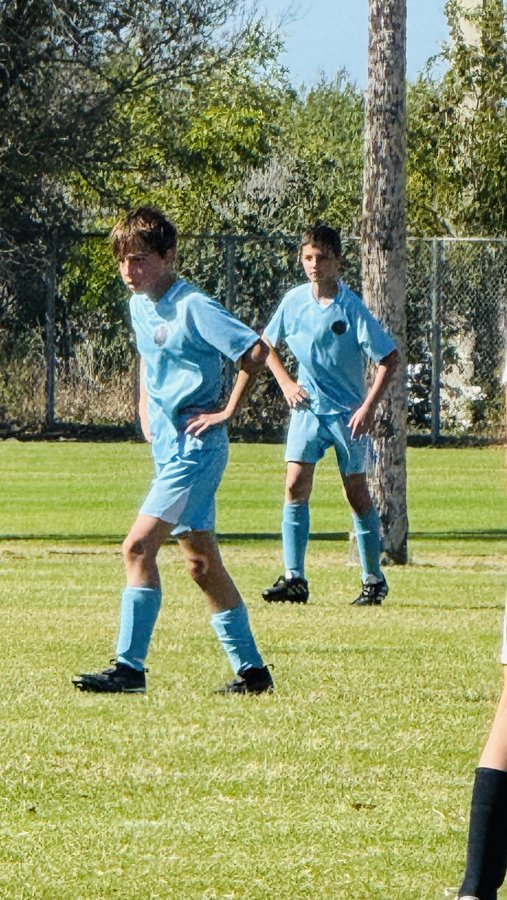
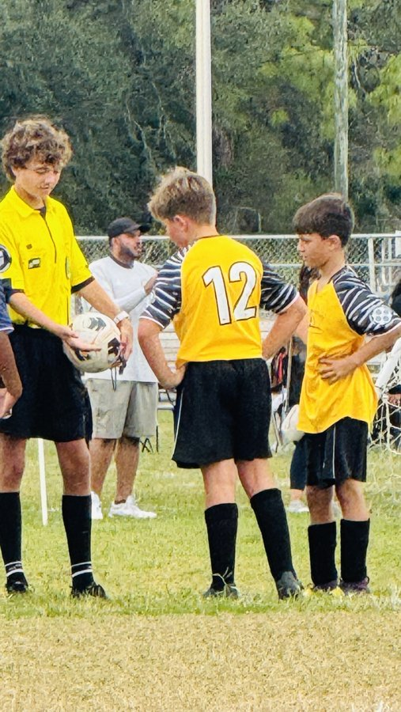
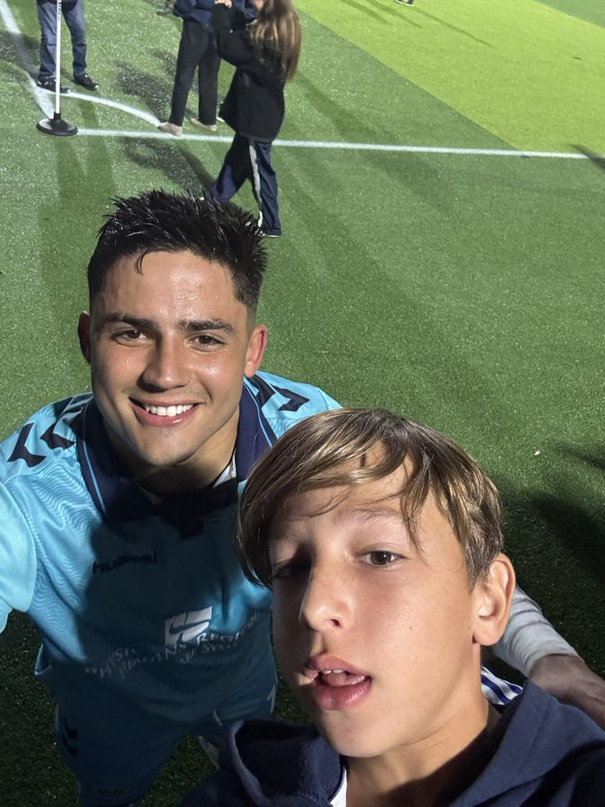

Nick: Soccer
Four seasons of cleats, grass stains and great games.
About Nick
Nick has played soccer for four seasons. Over that time he has grown into the game, learning new skills, making friends on the team and finding out how much fun it is to play on a Saturday morning.
Quick Facts
- Sport: Soccer
- Seasons played: 4
- Favorite part: Game day
Season Highlights
- Four seasons of soccer and counting
- Making friends and working with teammates
- Learning something new every season
On the Field


